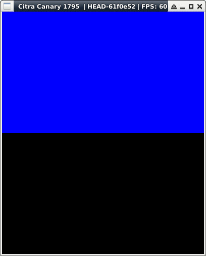

參考資訊：
https://libctru.devkitpro.org/index.html
https://github.com/devkitPro/3ds-examples
main.c
#include <stdio.h>
#include <stdlib.h>
#include <SDL.h>
int main(void)
{
uint32_t cnt = 0;
SDL_Surface *screen = NULL;
uint32_t col[] = { 0xf800, 0x7e0, 0x1f };
SDL_Init(SDL_INIT_VIDEO);
screen = SDL_SetVideoMode(400, 240, 16, SDL_SWSURFACE | SDL_DOUBLEBUF);
while (cnt < 600) {
cnt += 1;
SDL_FillRect(screen, &screen->clip_rect, col[cnt % 3]);
SDL_Flip(screen);
SDL_Delay(1000 / 60);
}
SDL_Quit();
return 0;
}
完成
